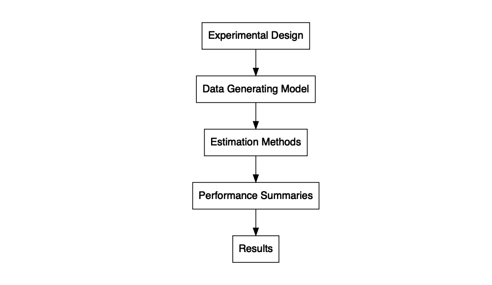

Monte Carlo simulations are computer experiments designed to study the performance of statistical methods under known data-generating conditions (Morris, White, & Crowther, 2019). Methodologists use simulations to examine questions such as: (1) how does ordinary least squares regression perform if errors are heteroskedastic? (2) how does the presence of missing data affect treatment effect estimates from a propensity score analysis? (3) how does cluster robust variance estimation perform when the number of clusters is small? To answer such questions, we conduct experiments by simulating thousands of datasets based on pseudo-random sampling, applying statistical methods, and evaluating how well those statistical methods recover the true data-generating conditions (Morris et al., 2019).
The goal of simhelpers is to assist in running simulation studies. The main tools in the package consist of functions to calculate measures of estimator performance like bias, root mean squared error, rejection rates. The functions also calculate the associated Monte Carlo standard errors (MCSE) of the performance measures. These functions are divided into three major categories of performance criteria: absolute criteria, relative criteria, and criteria to evaluate hypothesis testing. The functions use the tidyeval principles, so that they play well with dplyr and fit easily into a %>%-centric workflow (Wickham et al., 2019).
In addition to the set of functions that calculates performance measures and MCSE, the package also includes a function, create_skeleton(), that generates a skeleton outline for a simulation study. Another function, evaluate_by_row(), runs the simulation for each combination of conditions row by row. This function uses future_pmap() from the furrr package, making it easy to run the simulation in parallel (Vaughan & Dancho, 2018). The package also includes several datasets that contain results from example simulation studies.

Installation
Install the latest release from CRAN:
install.packages("simhelpers")
Install the development version from GitHub:
# install.packages("devtools") devtools::install_github("meghapsimatrix/simhelpers")
Acknowledgments
We are grateful for the feedback provided by Danny Gonzalez, Sangdon Lim and Man Chen.
References
Bengtsson, H. (2020). future: Unified parallel and distributed processing in r for everyone. Retrieved from https://CRAN.R-project.org/package=future
Blair, G., Cooper, J., Coppock, A., & Humphreys, M. (2019). Declaring and diagnosing research designs. American Political Science Review, 113(3), 838–859. Retrieved from https://declaredesign.org/paper.pdf
Chalmers, P. (2019). SimDesign: Structure for organizing Monte Carlo simulation designs. Retrieved from https://CRAN.R-project.org/package=SimDesign
Gasparini, A. (2018). rsimsum: Summarise results from Monte Carlo simulation studies. Journal of Open Source Software, 3(26), 739. https://doi.org/10.21105/joss.00739
Morris, T. P., White, I. R., & Crowther, M. J. (2019). Using simulation studies to evaluate statistical methods. Statistics in Medicine, 38(11), 2074–2102.
Vaughan, D., & Dancho, M. (2018). furrr: Apply mapping functions in parallel using futures. Retrieved from https://CRAN.R-project.org/package=furrr
Wickham, H., Averick, M., Bryan, J., Chang, W., McGowan, L. D., François, R., … Yutani, H. (2019). Welcome to the tidyverse. Journal of Open Source Software, 4(43), 1686. https://doi.org/10.21105/joss.01686